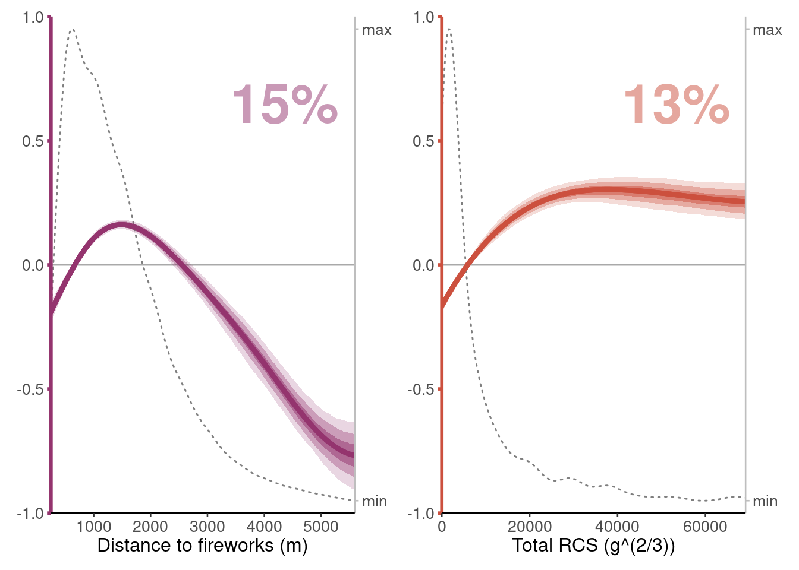

13 Pseudo-RCS & Distance to fireworks
confidence.intervals <- c(0.95, 0.8, 0.5)
colors <- c("urban" = "#94346E",
"agricultural" = "#73AF48",
"semiopen" = "#EDAD08",
"forests" = "#0F8554",
"wetlands" = "#38A6A5",
"waterbodies" = "#1D6996",
"dist_urban" = "#94346E",
"total_rcs" = "#CC503E",
"dist_radar" = "#666666")
x_labels <- c("urban" = "Urban",
"agricultural" = "Agricultural",
"semiopen" = "Semi-open",
"forests" = "Forests",
"wetlands" = "Wetlands",
"waterbodies" = "Water bodies",
"dist_urban" = "Distance to fireworks (m)",
"total_rcs" = "Total RCS (g^(2/3))",
"dist_radar" = "Distance from radar (m)")
limit_quantiles <- c("dist_urban", "total_rcs")
manual_limits <- list("dist_urban" = c(min(data_cleaned$dist_urban), quantile(data_cleaned$dist_urban, probs = 0.975)),
"total_rcs" = c(0, quantile(data_cleaned$total_rcs, probs = 0.975)))
# ylims <- c(-1.8, 1.5) + modelci$model$offset
ylims <- c(-1, 1)
plot_mboost_pdp <- function(modelci, data, which, confints, colors = NULL, ylims = ylims, varimp = NULL, offset = FALSE) {
# Extract bootstrapped quantiles
quants <- t(mboost_bootstrapped_quantiles(modelci, confidence.intervals, which = which))
if (offset) quants <- quants + modelci$model$offset
bootstrapped_quantiles <- as.data.frame(quants)
# bootstrapped_quantiles <- as.data.frame(t(mboost_bootstrapped_quantiles(modelci, confidence.intervals, which = which)))
bootstrapped_quantiles$x <- modelci$data[modelci$model$which(which)][[1]][, 1]
bootstrapped_quantiles$y <- plot.mboost_adjusted(modelci$model, which = which, newdata = modelci$data[[modelci$model$which(which)]])[[2]]
if (offset) {
bootstrapped_quantiles$y <- bootstrapped_quantiles$y + modelci$model$offset
ylims <- ylims + modelci$model$offset
}
p <- ggplot(bootstrapped_quantiles)
i <- 1
sorted_confints <- sort(confints, decreasing = TRUE)
# Add variable importance
if (is.null(varimp)) {
variable_importance <- function(model, which, exclude = c("dist_radar"), round = 0) {
vi <- as.data.frame(varimp(model)) %>%
filter(!variable %in% exclude)
vi$vi <- vi$reduction / sum(vi$reduction) * 100
vi %>%
filter(variable == which) %>%
dplyr::select(vi) %>%
as.numeric() %>%
round(round)
}
vi <- variable_importance(modelci$model, which)
} else {
vi <- varimp %>%
filter(variable == which) %>%
dplyr::select(mean_round)
}
offset_right <- 0.95
offset_top <- 0.35
if (which == "dist_urban") {
p <- p +
annotate("text", x = manual_limits$dist_urban[[2]] * offset_right, y = ylims[2] - offset_top, label = paste0(vi, "%"), hjust = 1, color = colors[which],
fontface = "bold", size = 12, alpha = 0.5)
} else if(which == "total_rcs") {
p <- p +
annotate("text", x = manual_limits$total_rcs[[2]] * offset_right, y = ylims[2] - offset_top, label = paste0(vi, "%"), hjust = 1, color = colors[which],
fontface = "bold", size = 12, alpha = 0.5)
} else {
p <- p +
annotate("text", x = 1 * offset_right, y = ylims[2] - offset_top, label = paste0(x_labels[which], ": ", vi, "%"), hjust = 1, color = colors[which],
fontface = "bold", size = 12, alpha = 0.5)
}
# Add density
if (which == "dist_urban") {
dens <- density(data[, which], bw = 225, from = manual_limits$dist_urban[[1]], to = manual_limits$dist_urban[[2]])
} else if (which == "total_rcs") {
dens <- density(data[, which], bw = 2000, from = manual_limits$total_rcs[[1]], to = manual_limits$total_rcs[[2]])
} else {
dens <- density(data[, which], bw = 0.03556, from = 0, to = 1)
}
scale_lims <- c(ylims[1] + 0.05, ylims[2] - 0.05)
dens$y <- scales::rescale(dens$y, to = scale_lims)
dens <- as.data.frame(list(as.matrix(dens$x), as.matrix(dens$y)))
colnames(dens) <- c("x", "y")
p <- p +
geom_line(aes(x = x, y = y), data = dens, color = "grey50", lineend = "round", linetype = 3) +
scale_y_continuous(sec.axis = sec_axis(~ ., name = "Predictor frequency", breaks = scale_lims, labels = c("min", "max")))
## Add horizontal line
if (offset) {
yintercept <- modelci$model$offset
} else {
yintercept <- 0
}
p <- p +
geom_hline(yintercept = yintercept, col = "darkgrey")
for (ci in sorted_confints) {
alphas <- rev(factor(sorted_confints))
ymax <- as.name(paste((1 - (1 - ci) / 2) * 100, "%", sep = ""))
ymax <- enquo(ymax)
ymin <- as.name(paste(((1 - ci) / 2) * 100, "%", sep = ""))
ymin <- enquo(ymin)
p <- p +
geom_ribbon(aes(x = x, ymin = !!ymin, ymax = !!ymax, alpha = !!alphas[i]), fill = colors[which]) +
geom_line(aes(x = x, y = y), color = colors[which], size = 1.5, lineend = "round")
if (offset) {
p <- p + scale_y_continuous(labels = function(x) {10^x})
}
i <- i + 1
}
p <- p +
scale_alpha_discrete(range = c(0.2, 0.5)) +
coord_cartesian(ylim = ylims, expand = FALSE) +
guides(alpha = FALSE)
if (which == "dist_urban") {
xlabel <- x_labels[which]
p <- p +
coord_cartesian(xlim = manual_limits$dist_urban, ylim = ylims, expand = FALSE)
# scale_x_continuous(breaks = c(0, 10000, 20000, 30000), labels = c(0, 10, 20, 30))
} else if (which == "total_rcs") {
xlabel <- x_labels[which]
p <- p +
coord_cartesian(xlim = manual_limits$total_rcs, ylim = ylims, expand = FALSE)
# scale_x_continuous(breaks = c(250, 500, 750), labels = c(250*4, 500*4, 750*4))
} else {
xlabel <- paste("% Coverage")
p <- p +
scale_x_continuous(breaks = c(0, 0.25, 0.5, 0.75, 1), labels = c("0%", "25%", "50%", "75%", "100%"))
}
p <- p +
theme_classic(base_size = 10) +
labs(x = xlabel, y = expression(paste("Flight response ", log[10], "(VIR)"))) +
theme(axis.line.y.left = element_line(color = colors[which], size = 1),
axis.line.y.right = element_line(color = "grey"),
axis.ticks.y.left = element_line(color = colors[which], size = 1),
axis.ticks.y.right = element_line(color = "grey"),
axis.title.y = element_text(),
axis.title.y.right = element_blank())
if (!which == "forests") {
p <- p +
theme(axis.title.y.left = element_blank())
}
if (!which == "waterbodies") {
p <- p +
theme(axis.title.x = element_blank())
}
p
}
predictors <- c("dist_urban", "total_rcs")
plots <- mapply(function(predictors) {plot_mboost_pdp(modelci, data_cleaned, which = predictors, confidence.intervals, colors, ylims, bvi_biol,
offset = FALSE)},
predictors = predictors,
SIMPLIFY = FALSE)
saveRDS(plots, file = "data/plots/paper/fig_rcs_disturban.RDS")
plots[[1]] + plots[[2]] +
plot_layout(widths = c(1, 1), nrow = 1) &
theme(axis.text.x = element_text(size = 10),
axis.title.x = element_text(size = 12),
axis.text.y = element_text(size = 10)) -> plots_rcs_disturban
ggsave(filename = "data/plots/paper/fig_rcs_disturban.pdf", plot = plots_rcs_disturban, width = 14, height = 5, dpi = 300, units = "cm")
plots_rcs_disturban